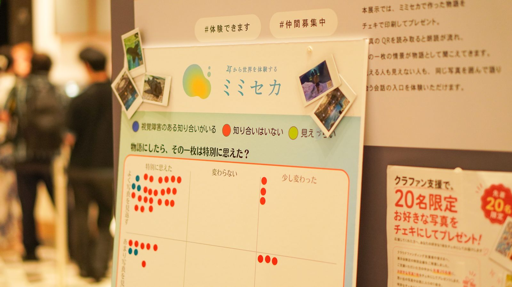

Where we work

We work from SHIBUYA QWS, a co-creation facility inside Shibuya Scramble Square. Start from a question, and create new value for society — MimiSeka is one of the projects selected for “QWS Challenge”, which runs on that idea.
We exhibited at the QWS showcase “CROSS STAGE” in April and July 2026. A remark from one visitor — “the description has just got better at describing; it isn't a story, is it?” — became the starting point for talking with a photograph.
How it started
It began with several long conversations at QWS with people who are visually impaired. Alongside the difficulties of daily life, we heard this: “just having someone put what they see into words makes the day much easier.”
What if, instead of only describing what is visible, it could be told as a story? That might be a new way to keep an experience. Enjoying a photograph does not have to belong only to people who can see. ——That is where MimiSeka started.
For press, partnerships or exhibitions, please use the contact form.